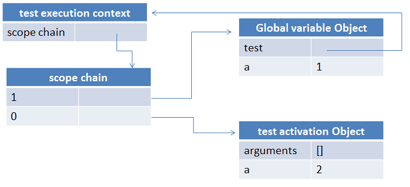
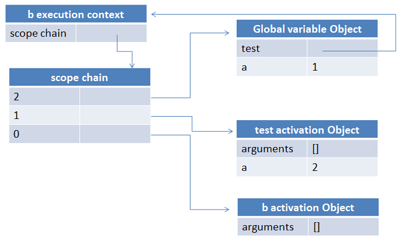
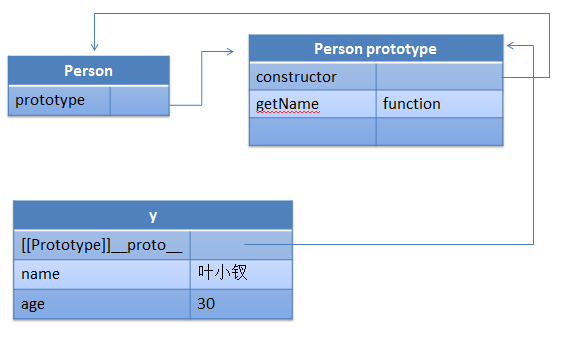

前言
近期杂事甚多，这些事情的积累对知识体系的提升有好处，但是却不能整理出来，也整理不出来
比如说我最近研究的Hybrid在线联调方案便过于依赖于业务，就算分享也不会有人读懂，若是抽一点来分享又意义不大
又拿最近做webapp view 转场动画研究，就是几个demo不断测试，感觉没有什么可说的
最后甚至对webapp中的History的处理方案也是有一些心得，一点方案，但是依旧难以整理成文，于是便开始文荒了
这个时候不妨便温故知新吧，对javascript的一些老知识点进行整理回顾，之后有大动作再说吧！
文中知识仅是个人积累总结，有误请指出
闭包
作用域链
闭包是javascript中一个重要知识点，也是javascript中一块魔法，我们在不熟悉他的情况下可能便经常使用了，熟悉他了解他是从初级至中级的一个标志
要真正了解闭包，就得从作用域链说起
javascript中，作用域链的作用是控制变量的访问顺序，仅此而已
首先，javascript在运行时需要一个环境，这个环境便是我们所谓执行上下文（execution context）
执行上下文决定了变量或者函数有权利访问其它数据，每个执行环境都有一个与之关联的变量对象，用于存储执行上下文中定义的变量或者函数
一般情况下我们所处的全局执行上下文便是window对象，所以全局范围内创建的所有对象全部是window的属性或者方法
函数的变量对象一般是其活动对象（activation Object）
其次，javascript没有块级作用域的概念，但是每个函数有自己的执行上下文，这个便是变相的块级作用域
每执行一个函数时，函数的执行上下文会被推入一个上下文栈中，函数若执行结束，这个上下文栈便会被弹出，控制权变回之前的执行上下文
当代码在执行上下文中执行时，变回创建一个作用域链，这个作用域链控制着执行上下文数据访问顺序
function test() { var a = 2; console.log(a); } var a = 1; test();
在这里便具有两个执行上下文，一个是window，一个是test函数
首先，在test执行之前，我们全局执行上下文已经存在，他便是window，这个时候我们会有a与test在作用域最前端
执行test时候，形成test执行上下文，于是最前端的执行上下文变成了test，这个时候会先形成活动对象，包括arguments以及a
在console.log时，会访问作用域链最近的a变量，也就是2，这个是打印出2的根本原因，若是没有作用域链这个顺序就坏了
下面是test执行时候的图示：

所以作用域链相关的知识点是：
① 控制变量访问顺序
② 执行上下文包含一个作用域链的指针
③ 该层函数外部有几个函数，便会有几个活动对象待处理，作用域链指针会指向其外部活动对象
④ 作用域链为执行上下文时函数内部属性，不要妄想去操作
闭包的形成
闭包的形成便是一个函数执行上下文中有一个变量被其内部函数使用了，并且这个内部函数被返回了，便形成了一个闭包
由于函数调用后，外部临时变量保存着内部的引用，执行时会形成内部上下文环境，内部的函数会包含外部的作用域链指向的变量对象，
这个时候就算外部执行环境消耗，由于外部保存着外部函数的活动对象的引用，所以这个变量对象不会被消耗，这个是闭包产生的原因
function test() { var a = 2; return function () { console.log(a); }; } var b = test(); b();
这里会形成三个执行环境，一个是全局的，一个是test的，一个是匿名函数（最终是b函数）的，我们依旧从test执行时说起
当test函数执行时：
var b = test();
会形成一个执行上下文，执行上下文包含一个作用域链指针，并且会形成一个活动对象
这里test的作用域链只是一个指针，他只是引用这个活动对象，执行结束后执行上下文会被释放，作用域链也会消失，但是其活动对象未必会GC
在b执行时，其匿名函数的作用域链便指向了外部函数的活动对象，不要问他怎么获得这个指针引用的，他就是知道，于是test的活动对象将一直被保存，直到b调用结束
这里b执行的关系是：

经典例子
关于闭包有一个经典的例子，他便是for循环的例子：
function createFn() { var ret = [], i; for (i = 0; i < 10; i++) { ret[i] = function () { return i; }; } return ret; } var fns = createFn();
这段代码非常简单，根据一个数组形成10个函数，每个函数返回其索引值，这类应用在实际工作中会经常用到，只不过我们需要的是其索引对应的数据，而不是简单的索引了
这类会createFn执行时会有两个执行环境，一个是自己的，一个是windows的，内部执行环境作用域链会指向一个活动对象
当然fns数组中任意一个函数执行时，其会使用到createFn的活动对象中的数据i，而该活动对象是被10个函数共用的，都是10，所以与预期不合
该问题的处理便是各自形成自己的闭包：
function createFn() { var ret = [], i; for (i = 0; i < 10; i++) { ret[i] = (function (i) { return function () { return i; }; })(i); } return ret; } var fns = createFn();
这里循环中会形成10个独立的执行上下文，其中的10个活动对象的arguments都保存了外部i的独立数据，而内部又形成一个闭包访问立即执行函数的数据，所以数据正确了......
其它闭包
requireJS中的闭包
标准的requireJS来说都是一个AMD的模块，比如：
define(function () { var add = function (x, y) { return x + y; }; return { add: add }; });
我们知道，requireJS每一次加载其模块皆会被执行一次，并且只会执行一次，这个模块会被requireJS所保存，所以这个匿名函数活动对象是不会被释放的，且是唯一的
这个时候我们很多组件便可以统一使用其功能即可，比如生成uuid什么的......当然，这种不释放的问题，也会导致heap值的提升，这个是不是有问题便需要各位去验证了
webapp中的闭包
webapp一般会使用requireJS管理模块，而内部又会形成许多view的实例，这个实例并且会保存下来，这样也会导致很多函数的活动对象得不到释放
一来二往之间，heap值会比传统网站高，这个是webapp一块比较头疼的地方，需要慢慢优化
原型链
最初javascript没有class的概念，我们使用的类是以function模拟，继承的实现手段一般依靠原型链，继承的使用也是评价一个jser的重要指标
每个函数都会包含一个原型对象prototype
原型对象prototype包含一个指向构造函数的指针constructor
实例对象包含一个内部属性__proto__指针指向原型对象prototype
这是他们之间的三角关系：

(function () { var Person = function (name) { this.name = name; }; //Person.prototype = {};//这句将影响十分具有constructor属性 Person.prototype.getName = function () { return this.name; }; var Student = function (name, sex, id) { this.name = name || '无名氏'; this.sex = sex || '不明'; this.id = id || '未填'; //学号 }; //相当于将其prototype复制了一次，若是包含constructor的话将指向Person Student.prototype = new Person(); Student.prototype.getId = function () { return this.id; } var y = new Person(); var s = new Student; var s1 = y instanceof Person; var s2 = s instanceof Student; var s3 = s instanceof Person; var s4 = Student.prototype.constructor === Person; var s5 = Student.constructor === Person; var s6 = Student.constructor === Function; var s = ''; })();
一般形式的继承方式如上，偶尔我们会这样干：
Student.prototype = {}
但是这样会导致prototype对象的constructor对象丢失，所以需要找回来，另外一个问题是，这里继承需要执行父类的构造方法，这样是有问题的
比如，父类的构造函数中有一些事件绑定什么的与子类无关，便会导致该类继承无用，所以很多时候我们需要自己实现继承，比较优雅的是prototype的做法，我这里对其进行了一定改造

var arr = []; var slice = arr.slice; function create() { if (arguments.length == 0 || arguments.length > 2) throw '参数错误'; var parent = null; //将参数转换为数组 var properties = slice.call(arguments); //如果第一个参数为类（function），那么就将之取出 if (typeof properties[0] === 'function') parent = properties.shift(); properties = properties[0]; function klass() { this.initialize.apply(this, arguments); } klass.superclass = parent; klass.subclasses = []; if (parent) { var subclass = function () { }; subclass.prototype = parent.prototype; klass.prototype = new subclass; parent.subclasses.push(klass); } var ancestor = klass.superclass && klass.superclass.prototype; for (var k in properties) { var value = properties[k]; //满足条件就重写 if (ancestor && typeof value == 'function') { var argslist = /^\s*function\s*\(([^\(\)]*?)\)\s*?\{/i.exec(value.toString())[1].replace(/\s/i, '').split(','); //只有在第一个参数为$super情况下才需要处理（是否具有重复方法需要用户自己决定） if (argslist[0] === '$super' && ancestor[k]) { value = (function (methodName, fn) { return function () { var scope = this; var args = [function () { return ancestor[methodName].apply(scope, arguments); } ]; return fn.apply(this, args.concat(slice.call(arguments))); }; })(k, value); } } klass.prototype[k] = value; } if (!klass.prototype.initialize) klass.prototype.initialize = function () { }; klass.prototype.constructor = klass; return klass; }
首先，继承时使用一个空构造函数实现，这样不会执行原构造函数的实例方法，再规范化必须实现initialize方法，保留构造函数的入口，这类实现比较优雅，建议各位试试
javascript中的DOM事件
事件流
PS：javascript的事件一块我说的够多了，这里再说一次吧......
javascript注册dom事件的手段很多：
① 直接写在dom标签上，onclick的做法
② 在js中这样写：el.onclick = function
上述做法事实上是不好的，因为他们无法多次定义，也无法注销，更加不用说使用事件委托机制了
上述两种做法的最终仍然是调用addEventListener方式进行注册冒泡级别的事件，于是这里又扯到了javascript事件的几个阶段
在DOM2级事件定义中规定事件包括三个阶段，这个是现有DOM事件的基础，这个一旦改变，前端DOM事件便需要重组
三个阶段是事件事件捕获阶段、处于目标阶段、冒泡阶段
事件捕获由最先接收到事件的元素往最里面传
事件冒泡由最具体元素往上传至document
一般而言是先捕获后冒泡，但是处于阶段的事件执行只与注册顺序有关，比如：
每次点击一个DOM时候我们会先判断是否处于事件阶段，若是到了处于阶段的话便不存在捕获阶段了
直接按照这个DOM的事件注册顺序执行，然后直接进入冒泡阶段逻辑，其判断的依旧是e.target与e.currentTarget是否相等
这个涉及到一个浏览器内建事件对象，我们注册事件方式多种多样
除了addEventListener可以注册捕获阶段事件外，其余方式皆是最后调用addEventListener接口注册冒泡级别事件
注册的事件队列会根据DOM树所处位置进行排列，最先的是body，到最具体的元素
每次我们点击页面一个区域便会先做判断，是否处于当前阶段，比如：
我当前就是点击的是一个div，如果e.target==e.currentTarget，这个时候便会按注册顺序执行其事件，不会理会事件是捕获还是冒泡，而跳过捕获流程，结束后会执行冒泡级别的事件，若是body上有冒泡点击事件（没有捕获）也会触发，以上便是DOM事件相关知识点
事件冒泡是事件委托实现的基石，我们在页面的每次点击最终都会冒泡到其父元素，所以我们在document处可以捕捉到所有的事件，事件委托实现的核心知识点是解决以下问题：
① 我们事件是绑定到document上面，那么我怎么知道我现在是点击的什么元素呢
② 就算我能根据e.target获取当前点击元素，但是我怎么知道是哪个元素具有事件呢
③ 就算我能根据selector确定当前点击的哪个元素需要执行事件，但是我怎么找得到是哪个事件呢
如果能解决以上问题的话，我们后面的流程就比较简单了
确定当前元素使用 e.target即可，所以我们问题以解决，其次便根据该节点搜索其父节点即可，发现父节点与传入的选择器有关便执行事件回调即可
这里还需要重新e.currentTarget，不重写全部会绑定至document，简单实现：
var arr = []; var slice = arr.slice; var extend = function (src, obj) { var o = {}; for (var k in src) { o[k] = src[k]; } for (var k in obj) { o[k] = obj[k]; } return o; }; function delegate(selector, type, fn) { var callback = fn; var handler = function (e) { //选择器找到的元素 var selectorEl = document.querySelector(selector); //当前点击元素 var el = e.target; //确定选择器找到的元素是否包含当前点击元素，如果包含就应该触发事件 /************* 注意，此处只是简单实现，实际应用会有许多判断 *************/ if (selectorEl.contains(el)) { var evt = extend(e, { currentTarget: selectorEl }); evt = [evt].concat(slice.call(arguments, 1)); callback.apply(selectorEl, evt); var s = ''; } var s = ''; }; document.addEventListener(type, handler, false); }
事件委托由于全部事件是绑定到document上的，所以会导致阻止冒泡失效，很多初学的同学不知道，这里要注意
事件模拟
事件模拟是dom事件的一种高级应用，一般情况下用不到，但是一些极端情况下他是解决实际问题的杀手锏
事件模拟是javascript事件机制中相当有用的功能，理解事件模拟与善用事件模拟是判别一个前端的重要依据，所以各位一定要深入理解
事件一般是由用户操作触发，其实javascript也是可以触发的，比较重要的是，javascript模拟的触发遵循事件流机制！！！
意思就是，javascript触发的事件与浏览器本身触发其实是一样的，简单模拟事件点击：
<html xmlns="http://www.w3.org/1999/xhtml"> <head> <title></title> <style type="text/css"> #p { width: 300px; height: 300px; padding: 10px; border: 1px solid black; } #c { width: 100px; height: 100px; border: 1px solid red; } </style> </head> <body> <div id="p"> parent <div id="c"> child </div> </div> <script type="text/javascript"> alert = function (msg) { console.log(msg); } var p = document.getElementById('p'), c = document.getElementById('c'); c.addEventListener('click', function (e) { console.log(e); alert('子节点捕获') }, true); c.addEventListener('click', function (e) { console.log(e); alert('子节点冒泡') }, false); p.addEventListener('click', function (e) { console.log(e); alert('父节点捕获') }, true); p.addEventListener('click', function (e) { console.log(e); alert('父节点冒泡') }, false); document.addEventListener('keydown', function (e) { if (e.keyCode == '32') { var type = 'click'; //要触发的事件类型 var bubbles = true; //事件是否可以冒泡 var cancelable = true; //事件是否可以阻止浏览器默认事件 var view = document.defaultView; //与事件关联的视图，该属性默认即可，不管 var detail = 0; var screenX = 0; var screenY = 0; var clientX = 0; var clientY = 0; var ctrlKey = false; //是否按下ctrl var altKey = false; //是否按下alt var shiftKey = false; var metaKey = false; var button = 0; //表示按下哪一个鼠标键 var relatedTarget = 0; //模拟mousemove或者out时候用到，与事件相关的对象 var event = document.createEvent('Events'); event.myFlag = '叶小钗'; event.initEvent(type, bubbles, cancelable, view, detail, screenX, screenY, clientX, clientY, ctrlKey, altKey, shiftKey, metaKey, button, relatedTarget); console.log(event); c.dispatchEvent(event); } }, false); </script> </body> </html>
模拟点击事件是解决移动端点击响应的基石，有兴趣的同学自己去研究下吧，我这里不多说
延时执行
延时执行settimeout是javascript中的一道利器，很多时候一旦解决不了我们便会使用settimeout，但是对settimeout的理解上，很多初学的朋友有一定误区
初学的朋友一般认为settimeout是在多少毫秒后便会被执行，事实上其后面的数据代表的是一个时间片，或者说是优先级，settimeout的回调会在主干程序之后执行
比如：
var a = 0, b = 1; setInterval(function () { a = 1; }, 0) while (1) { //... b++; if(a == 1) break; }
以下代码会导致浏览器假死，因为settimeout中的代码永远不会执行
settimeout真正的的用法是：
① 延时请求，减少不必要的请求
② 需要过多的操作dom结构时，为了闭包浏览器假死，可以使用settimeout
另外，zepto中有一段与settimeout有关的耻辱代码，在模拟tap事件时候，zepto使用dom模拟click事件的方式实现了：
.on('touchend MSPointerUp pointerup', function(e){
if((_isPointerType = isPointerEventType(e, 'up')) &&
!isPrimaryTouch(e)) return
cancelLongTap()
// swipe
if ((touch.x2 && Math.abs(touch.x1 - touch.x2) > 30) ||
(touch.y2 && Math.abs(touch.y1 - touch.y2) > 30))
swipeTimeout = setTimeout(function() {
touch.el.trigger('swipe')
touch.el.trigger('swipe' + (swipeDirection(touch.x1, touch.x2, touch.y1, touch.y2)))
touch = {}
}, 0)
// normal tap
else if ('last' in touch)
if (deltaX < 30 && deltaY < 30) {
tapTimeout = setTimeout(function() {
var event = $.Event('tap')
event.cancelTouch = cancelAll
touch.el.trigger(event)
if (touch.isDoubleTap) {
if (touch.el) touch.el.trigger('doubleTap')
touch = {}
}
else {
touchTimeout = setTimeout(function(){
touchTimeout = null
if (touch.el) touch.el.trigger('singleTap')
touch = {}
}, 250)
}
}, 0)
} else {
touch = {}
}
deltaX = deltaY = 0
})
比较狗血的是，他在tap这里使用了settimeout，导致了一个延时，这个延时效果直接的影响便是其event参数失效
也就是这里，touchend时候传入的event参数不会被tap事件用到，什么e.preventDefault之类的操作便于tap无关了，此类实现至今未改
其它
localstorage
localstorage的使用在我厂webapp的应用中，达到了一个前所未有的高度，我们惊奇的发现，其真实容量是：
localstorage 的最大限制按字符数来算，中英文都是最多500多万个字符，webkit为5242880个
于是很多时候，localstorage的滥用便会引发localstorage存储失效，导致业务错误
并且localstorage的滥用还表现在存储业务关键信息导致url对外不可用的情况，所以使用localstorage的朋友要慎重！
其它
......
结语
今天我们花了一点时间回顾了一些javascript的核心知识点，希望对各位有用，我这里先撤退了，文中理解有误请提出